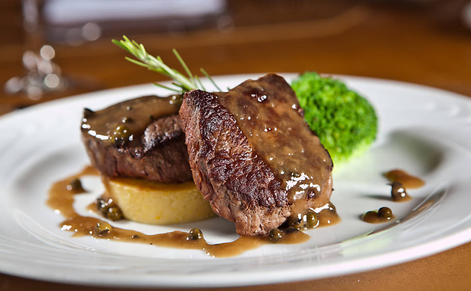
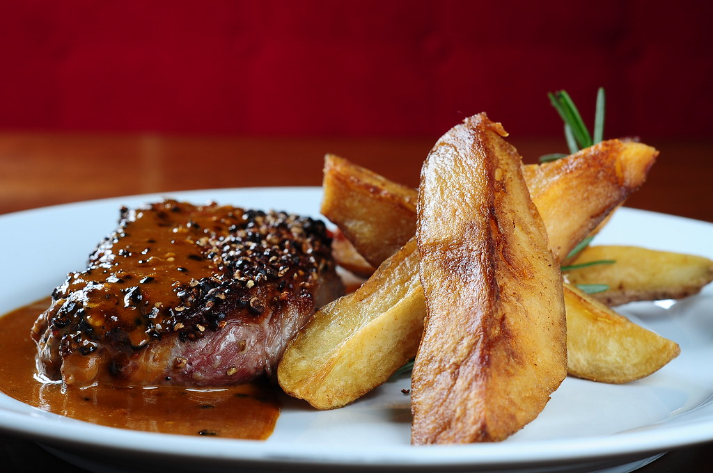
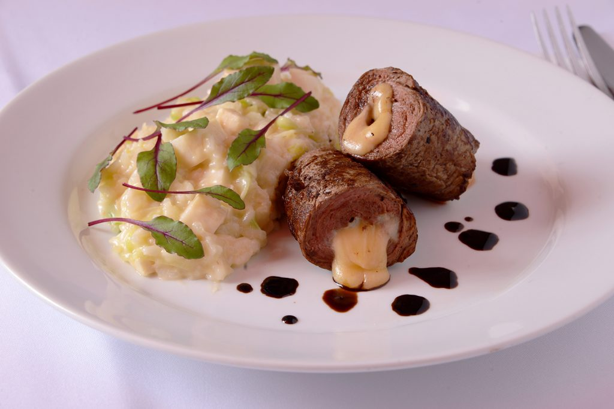
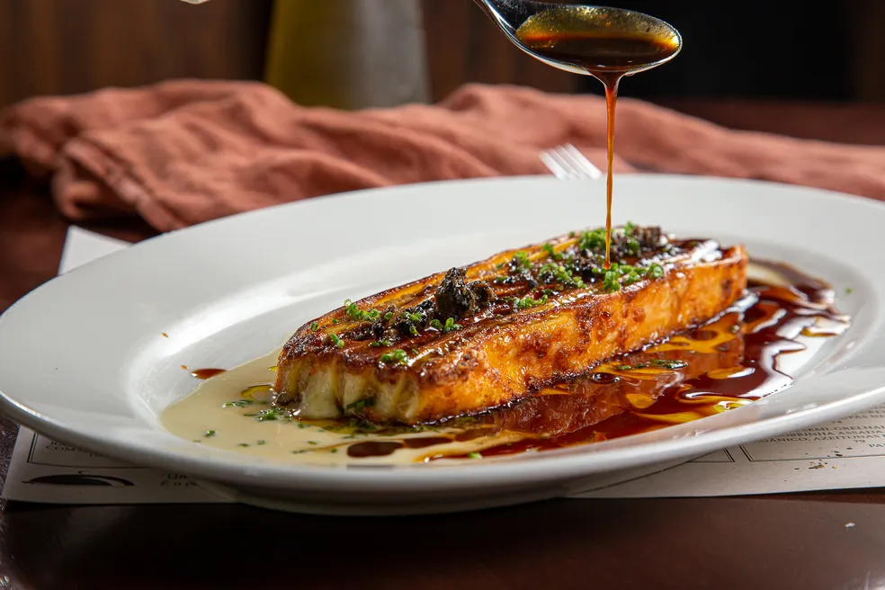
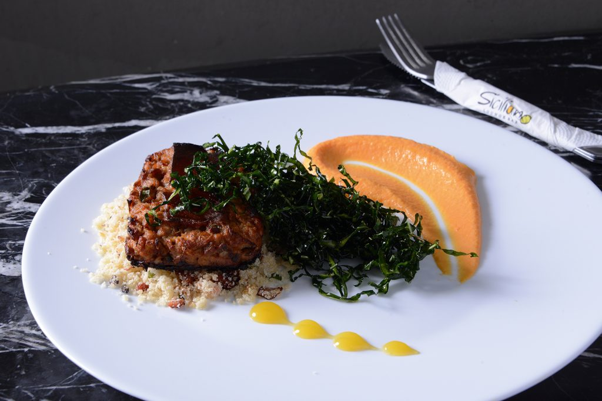

Explore algumas das nossas especialidades e descubra a qualidade e o cuidado em cada prato servido no Golden Plate. Cada imagem representa a dedicação da nossa equipe em proporcionar uma experiência gastronômica única.
Utilizamos ingredientes selecionados e técnicas modernas para criar pratos que encantam tanto pelo sabor quanto pela apresentação. Nossa galeria mostra um pouco do que você pode esperar ao nos visitar.




